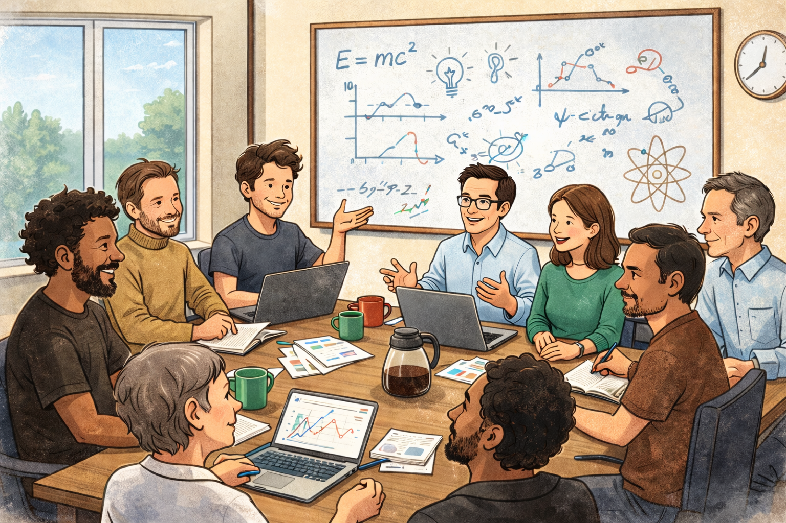
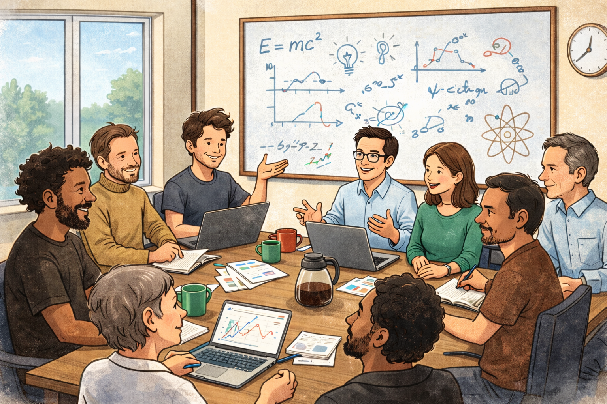

Welcome to the Demler Group webpage!
Our research focuses on Theoretical Condensed Matter Physics broadly defined. Examples of research subjects we are exploring include: high-temperature superconductivity, photocontrol of correlated states, non-linear spectroscopy, quantum enhanced sensing with local probes (e.g. NV centers in diamond), electron-photon interactions, Bose and Fermi polarons in electron systems and ultracold atoms, equilibrium and dynamical properties of magnons in YIG, systems with strong light-matter coupling, hyperbolic polaritons, quantum simulations with ultracold atoms and Rydberg arrays, using machine learning to analyze data from quantum simulators, and real-world applications of NISQ devices.